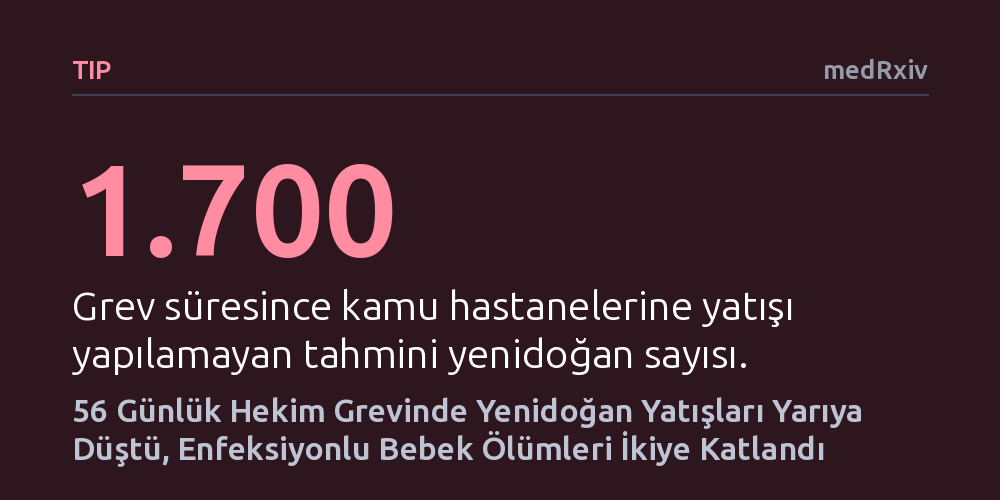

TIP · medRxiv · 2026-10-14
Kenya'da 2024 yılındaki 56 günlük hekim grevinin yenidoğan bakımına ve ölümlerine etkisi 11 kamu hastanesinde incelendi. Grev süresince yenidoğan yatışları yarıya inerken genel ölüm oranı değişmedi; ancak enfeksiyon tanılı bebeklerde ölüm oranı iki katına çıktı.
Hekim grevlerinin asıl yıkıcı bedelinin hastane içi genel ölümlerden ziyade, sağlık hizmetine hiç erişemeyen ve hekim takibine muhtaç enfeksiyonlu bebeklerce ödendiğini gösteriyor.

Yenidoğan yoğun bakım servisleri, tıbbın dakikalarla yarıştığı ve uzman hekim müdahalesinin hayati önem taşıdığı en hassas alanların başında gelir. Kenya'nın kamu sağlık sistemi ise uzun yıllardır hem ciddi personel yetersizliğiyle hem de çalışma koşullarına tepki olarak doğan hekim grevleriyle mücadele ediyor. 2024 yılında hekimlerin ülke çapında başlattığı 56 günlük iş bırakma eylemi, bu kırılgan sağlık altyapısının en korunmasız hastalarını, yani henüz hayata yeni gözlerini açmış bebekleri doğrudan etkiledi.
Sağlık çalışanlarının greve gitmesi kamuoyunda genellikle hastanelerde ölümlerin hızla artacağı endişesini doğurur; ancak krizlerin gerçek etkisi bundan çok daha karmaşıktır. Grev esnasında aileler hastanelere başvurmaktan vaz mı geçti, yatan bebeklerin rutin bakımı aksadı mı, yoksa kritik vakalardaki kayıplar mı tırmandı? Bu soruların yanıtlanması, hekim eylemleri sırasında sağlık sisteminin nasıl ayakta tutulabileceğini ve bebek ölümlerinin nasıl önlenebileceğini planlamak açısından büyük önem taşıyor.
Araştırmacılar bu soruları yanıtlamak için Kenya'da yenidoğan bakım standartlarını yükseltmeyi amaçlayan NEST360 İttifakı ile çalışan 11 kamu hastanesini inceledi. Çalışmada, Aralık 2023 ile Ağustos 2024 tarihleri arasındaki dönemi kapsayan 12.184 yenidoğan yatış kaydı ayrıntılı olarak ele alındı. Ayrıca grevin öncesindeki ve sonrasındaki genel eğilimleri doğru modelleyebilmek amacıyla, toplam 72 haftalık bir zaman aralığındaki 27.638 yatış verisi geriye dönük biçimde analiz edildi.
İncelemede, sağlık araştırmalarında güvenilirliği yüksek kabul edilen "kesintili zaman serisi analizi" yöntemi kullanıldı. Hastaneler arasındaki yapısal farklılıkları ve yıl içerisindeki mevsimsel değişimleri hesaba katan istatistiksel modeller kuruldu. Bu sayede grev öncesi, 56 günlük grev dönemi ve grev sonrası haftalık yatış sayıları, sunulan klinik bakım uygulamaları, vaka ölüm oranları ve doğum ağırlığına göre ayrıştırılmış riskler birbiriyle nesnel biçimde karşılaştırılabildi.
Elde edilen veriler, grevin yenidoğan servislerindeki en belirgin etkisinin başvurulardaki sert çöküş olduğunu gösterdi. Grevden önce haftada ortalama 413 bebek yenidoğan ünitelerine kabul edilirken, bu sayı grev sırasında 189'a geriledi. Bu düşüş, 56 günlük eylem süresince beklenenden yaklaşık 1.700 daha az bebeğin hastaneye yatırıldığına işaret ediyordu. Servislere kabul edilen bebeklerin profili de değişti: Yatan bebekler daha düşük doğum ağırlığına sahipti, daha sık prematüre doğmuştu ve hastane dışından sevk edilen bebeklerin oranı belirgin şekilde yükselmişti. Grev sona erdiğinde ise haftalık yatış sayıları hızla eski olağan seviyesine döndü.
Buna karşılık, hastaneye ulaşmayı başaran ve yatışı yapılan bebeklerde belgelenen klinik bakım adımlarında ve kaba ölüm oranında (%12,5'ten %14,9'a) istatistiksel olarak anlamlı bir sıçrama kaydedilmedi. Ancak tablo enfeksiyon tanısı alan bebekler için çok daha ağır oldu. Kayıtlı enfeksiyonu bulunan yenidoğanlar arasındaki ölüm oranı %4,7'den %9,6'ya fırlayarak tam iki katına çıktı. Bu durum, hekimlerin yokluğunda hemşirelerin temel destek bakımını sürdürebildiğini, ancak karmaşık antibiyotik tedavisi ve yakın hekim takibi gerektiren ağır enfeksiyon vakalarında tablonun hızla kötüleştiğini gösterdi.
Çalışmanın bulguları, grevlerin etkisini yalnızca hastanede yatan hastaların ölüm istatistiklerine bakarak değerlendirmenin büyük bir yanılgı olacağını ortaya koyuyor. Hastane içi genel ölüm oranının belirgin biçimde artmamış olması, grevin zararsız geçtiği anlamına gelmiyor. Nitekim hastane kapısından içeri giremeyen yaklaşık 1.700 bebeğin evlerde veya donanımsız merkezlerde nasıl bir sonuçla karşılaştığı bu kayıtlarda yer almıyor. Yazarlar da bu durumu açıkça ifade ediyor: "Bu analiz yalnızca yatan hasta verileriyle sınırlıydı; dolayısıyla hastanelere ulaşamayan yenidoğanların akıbeti yakalanamadı."
Araştırma, sağlık çalışanlarının meşru hak arayışları ile hastaların yaşam hakkı arasındaki hassas dengeyi korumak adına somut adımlar öneriyor. Gelecekteki iş bırakma eylemlerinde bebek ölümlerini önlemek için görev devri protokollerinin resmileştirilmesi, eğitimli hemşirelerin yetkilerinin netleştirilmesi ve grev zamanlarında dahi yenidoğan yoğun bakım gibi hayati servislerde kesintisiz çalışmayı zorunlu kılan asgari hizmet sözleşmelerinin yürürlüğe konması şart görünüyor.